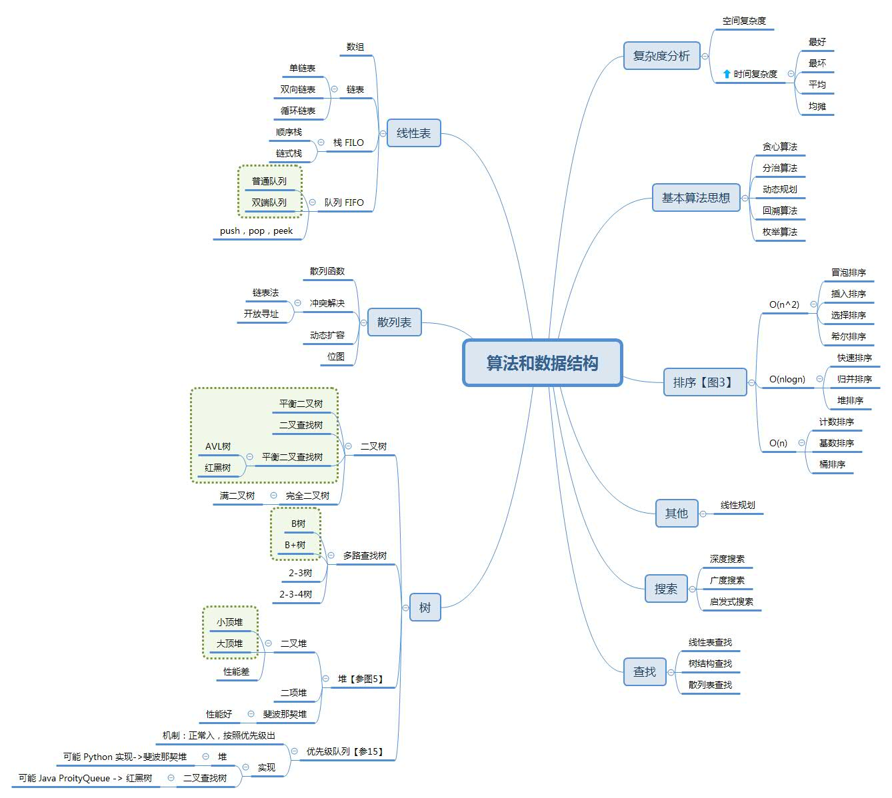
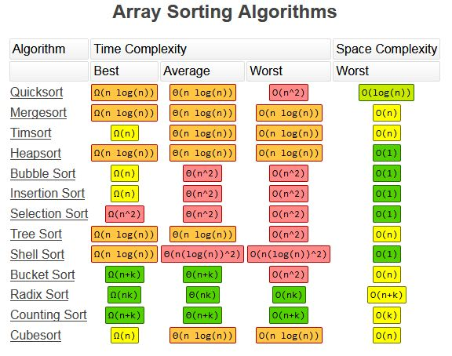

一. Master Thereom 主定律 #
 图1.主定律在常用算法中的应用
图1.主定律在常用算法中的应用
二. 数据结构操作 O(n) #
 图2.数据结构操作
图2.数据结构操作
线性表: #
Array, Stack, Queue, Singly-Linked List, Doubly-Linked List
Skip List && Binary Search Tree: #
+ Average && Worst 相同
+ Redis的SortedSet用Skip List实现
二叉搜索树: #
+ 左子树上所有结点的值均小于它的根结点的值；
右子树上所有结点的值均大于它的根结点的值；
它的左、右子树也分别为二叉搜索树。
+ 最差时间复杂度的二叉搜索树是O(n)，退化成链表;
所以提出了平衡二叉搜索树， 最差时间复杂度是O(logn)。
平衡二叉搜索树: Red-Black Tree, Splay Tree, AVL Tree
B-tree: #
多路搜索树，并不是二叉的
三. 数组排序算法 O(n) #

稳定排序:有两个排序关键字的时候，稳定排序可以让第一个关键字排序的结果服务于第二个关键字排序中数值相等的那些数. [5][7]
四 = 二 + 三 #
 图4.BigO总结
图4.BigO总结
五. 堆实现 O(n) #

图5.堆实现
堆实现: #
Binary， Binomial， Fibonacci， Strict Fibonacci（性能好，用的比较多）
参考: #
- 算法大牛的git
- 每个程序员都应该收藏的算法复杂度速查表 good
- 从头到尾彻底解析Hash表算法
- big O good
- 董的博客 - 算法之排序算法 稳定排序，原地排序
- Data Structure Visualizations good
- 五分钟小知识：为什么要分稳定排序和非稳定排序？